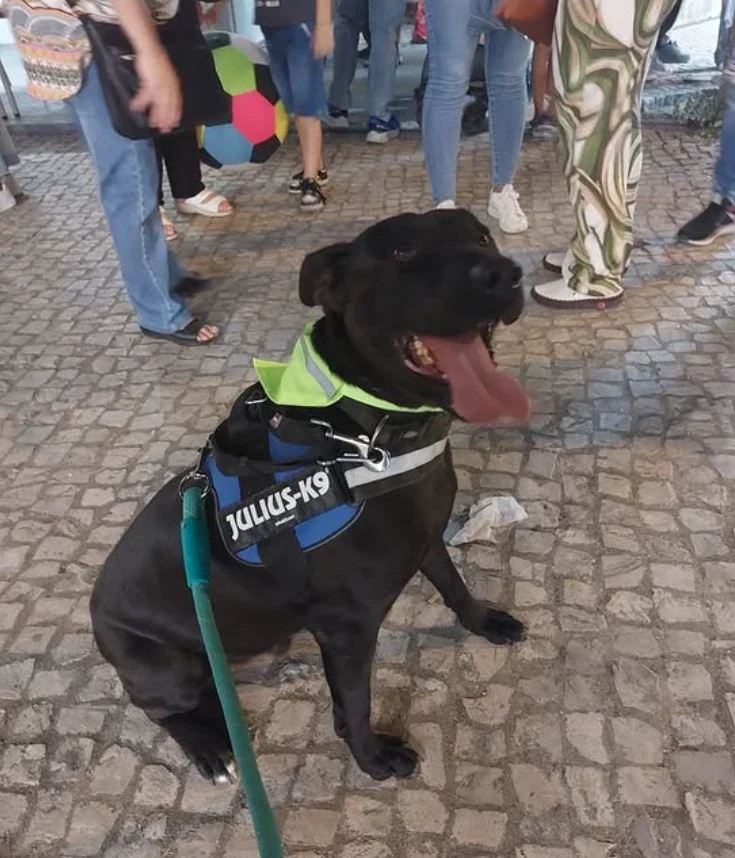
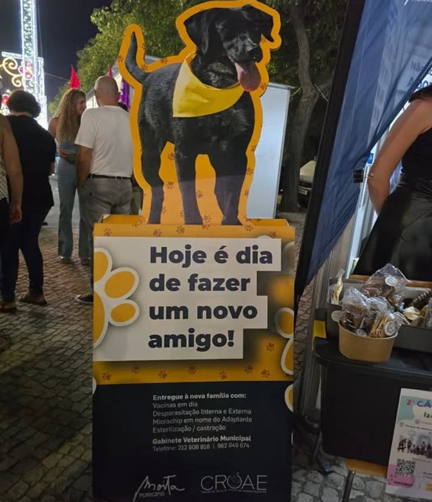
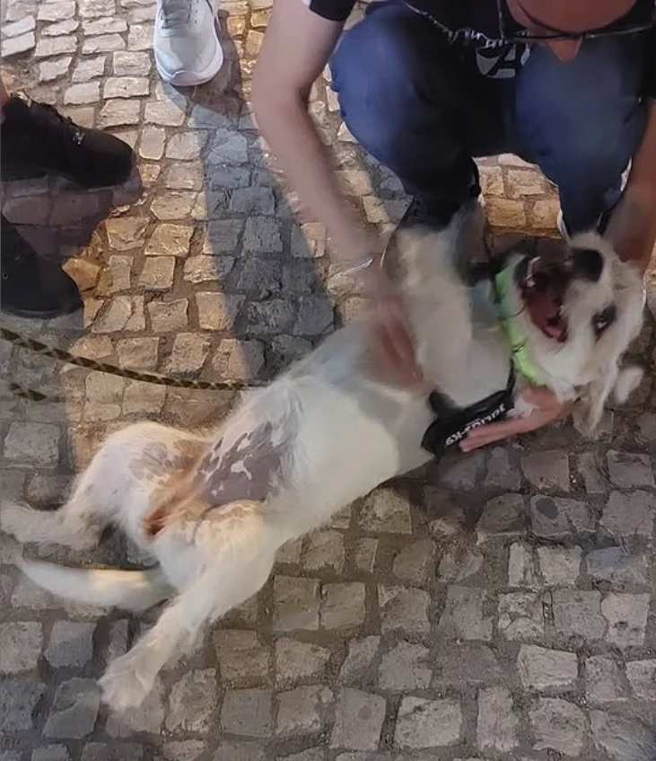
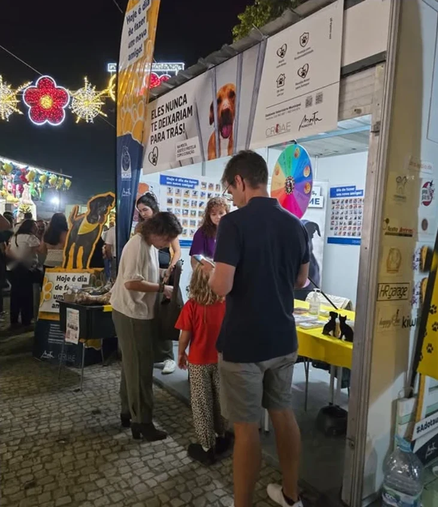
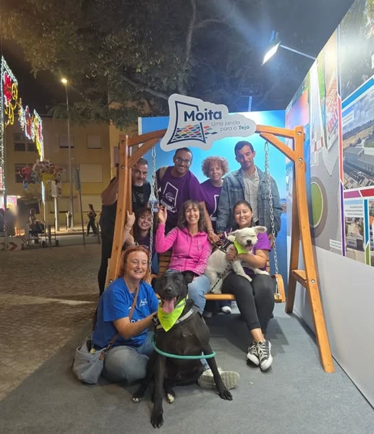

Centro de Recolha Oficial de Animais Errantes · Moita
Hoje é dia de fazer um novo amigo.
Ao sábado e ao domingo, das 10h às 12h, os cães do CROAE saem a passeio com voluntários. Vem dar uma volta com um deles. É assim que quase todas as adoções começam.

Porque vale a pena ir lá
Um centro novo, municipal, com tudo tratado.
Inaugurado a 12 de março. Cinco edifícios e uma zona de recreio comum, construídos de raiz pela Câmara Municipal da Moita.
Lugares para cães e gatos em 40 boxes. Cada animal é acompanhado pelo Gabinete Veterinário Municipal.
Em vacinas, microchip, desparasitação e esterilização: vão incluídos na adoção.
Passeios com voluntários das 10h às 12h. Marca por telefone ou e-mail e aparece.
Três formas de entrar
Escolhe a tua.

Adotar
Visita, conversa com a equipa, leva-o para casa com vacinas, microchip, desparasitação e esterilização tratadas.

Ajudar
Voluntariado ao fim de semana, família de acolhimento temporário ou um saco de ração. Uma hora já muda um dia inteiro.

Ser parceiro
Para empresas e associações do concelho: apoio em espécie, presença nos eventos de adoção, divulgação.
Ao fim de semana
Os animais atuais estão no Instagram. Os passeios são aqui.
Este site não tem lista de animais: a equipa publica quem chega e quem parte no @croaemoita, todos os dias. Vê lá quem te chamou a atenção, marca o passeio e vem conhecê-lo pessoalmente.
10h – 12h Com marcação prévia · 962 049 674 · gab.vetmun@cm-moita.pt

Quem está lá
Técnicos do Gabinete Veterinário e voluntários do concelho.
O CROAE é gerido pelo Gabinete Veterinário Municipal. Os passeios, os eventos de adoção e o stand nas Festas da Moita são feitos com voluntários — pessoas da Moita que dão duas horas ao fim de semana.
Como chegar
Liga antes. Depois é só aparecer.
- Telefone
- 212 806 816
- Telemóvel
- 962 049 674
- gab.vetmun@cm-moita.pt
- Morada
- Estrada Municipal do Pinhal do Forno, em frente ao Cemitério do Pinhal do Forno · Moita
- Passeios
- Sábado e domingo, 10h–12h, com marcação